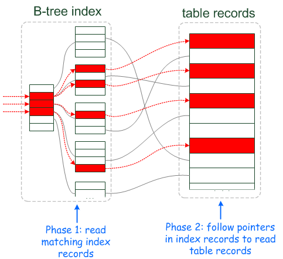

MySQL学习笔记
用来记录
MySQL工作和学习过程中的一些知识，和一些坑点
整体架构
全局来看，MySQL主要由两个关键部分组成，server服务端和storage engine两部分组成。查询优化(Query optimization) 主要发生server这一层，且查询 优化可以分成如下四个阶段。
- 逻辑转换 Logical Transformation：即不对query的结果造成影响，只对query的条件进行等价转换
- 准备基于代价的优化 Preparation for Cost-based Optimization
- 基于代价的优化 Cost-based Optimization
- 执行计划精细化 Plan Refinement

概念和区别
1. MySQL中Schema 和 Database的区别
在MySQL物理上schema与database是等同的. 可以在语法上将SCHEMA与DATABASE相互替换, 例如可以使用CREATE SCHEMA代替CREATE DATABASE
在其他不同的数据库上面, Schema和Database是不同的, 在Oracle数据库中, Schema是DataBase的一部分: 表或者其他对象属于单一的用户
2. INT(11) 指定长度
MySQL: 的数据类型
TINYINT = 1 byte (8 bit)SMALLINT = 2 bytes (16 bit)MEDIUMINT = 3 bytes (24 bit)INT = 4 bytes (32 bit)BIGINT = 8 bytes (64 bit)指定长度将会设置实际显示控制台输出int的长度, 当设置了ZEROFILL字段时, 则会补0输出, 否则不变
3. CHAR 和 VARCHAR类型
CHAR类型用于定长的字符串, 并且必须在圆括号内用一个大小修饰符来2定义. 这个大小修饰符德尔范围从0-255. 比指定长度大的值被截短, 而比指定长度小的值将会用空格补全.VARCHAR类型是一种可变长的字符串类型, 并且也必须带有一个在0-255之间的指示器, 即最大长度
如果使用长度确定的字符串, 则使用CHAR将会得到比较高的效率
4. MySQL URL 的格式
mysql://<username>:<password>@<host>:<port>/<db_name>
5. MySQL select 大表
SELECT * FROM <table> LIMIT <offset>, <step> 可以按照偏移加步长的方式读取一个chunk的结果.
上述执行：即执行了如果是主键索引的话，即在B+树上执行查询，效率很高
SELECT 的结果, 使用python 中的表示时使用yeild生成器, 可以减小内存的消耗
6. SQLAIchemy 中 flush 和 commit的区别
Session是持续的与数据库进行事务交互的最基础的对象. 只有事务被提交了, 数据才会被持久化存储在数据库中. 否则此次事务将不会生效.
Session.flush持续的与数据库进行一系列的交互,包括(insert, update, delete 操作).数据库将会维持这些操作到一个事务中, 并不会进行持久化的存储, (即存储到硬盘上面), 直到数据库接受到了COMMIT操作, 即Session.commit()则将会进行事务的提交.
flush总是作为commit调用的一部分
当使用一个Session对象去查询数据库, 此次查询将会返回unflushed的部分(即未提交事务的部分). 默认的Session对象的autoflush=True, 也可以使之成为False
autocommit: 避免的手动去管理事务, 当flush之后同时进行了commit
7. MySQL数据库批量插入优化策略
- 批量插入的效率比单次插入效率高. 如果有去重的操作好像只能进行单次的操作
- 插入无索引的数据表比插入有索引的数据表要快速, 因为有索引的数据库表, 插入时还需要调整B+树的结构
- 在事务中插入效率较低
8. MySQL数据库主键与索引的区别
关系型数据库依赖于主键, 主键是数据库物理模式的基石, 主键在物理层面上面有两个用途: 1. 唯一的标识某一行 2. 作为可以被外键引用的有效对象
- 主键一定是唯一索引, 即数据库管理系统对主键自动生成唯一索引.
- 一个表中可以有多个索引, 但是只能有一个主键
- 主键列不允许为空, 而唯一索引列允许为空
9. MySQL group by语句
group by语句用来对数据的分组和合计， 即根据规则分组，然后分别对若干个组进行处理。group by为先排序后分组。例如：在消费记录表中，统计每个人的消费总和。
xxxxxxxxxxSELECT user, SUM(price) from orders GROUP by user语法如下：
xxxxxxxxxxSELECT column_name, aggregate_function(column_name)FROM table_nameWHERE column_name operator valueGROUP BY column_name10. mysqldump 使用
MySQL数据库备份工具
mysqldump:的本质是通过SELECT * FROM table;获取表中的数据mysqldump: 只适合放到业务低峰期做，如果备份的过程中数据操作频繁，会造成Undo表空间越来越大，mysqldump: 的效率比较低下，START TRANSACTION /*!40100 WITH CONSISTENT SNAPSHOT */只能等到所有表都备份完才结束。mysqldump：会锁表mysqldump --help: 查看具体命令
11. mysql LIMIT OFFSET vs BETWEEN AND （查询优化）
mysql : 范围查询通常使用有LIMIT OFFSET和BETWEEN AND两种。
LIMIT OFFSET: LIMIT 200, OFFSET 1000 表示读取总共1200条数据，舍弃前1000条数据，可想而知，可见查询效率与OFFSET呈正相关。OFFSET越大查询到越多的没用数据。BETWEEN AND:WHERE id BEWTEEN 1000 AND 1200: 和上述语句一样但是，性能更高，是根据数据库B+Tree索引列进行查询，时间复杂度为O(logn)，没有多余数据的查询，性能很高。
总结：
- 善用索引，B+Tree数据结构对于查询优化有着至关重要的作用，在数据量很大是1000w+量级，
BETWEEN AND比LIMIT OFFSET在性能上有着10倍以上的提升。 - 对于实际生产环境，要对线上数据库进行迁移，或者备份，推荐使用
BETWEEN AND对主键进行扫描，有着比mysqldump和LIMIT OFFSET明显的效率提升。
12. mysql JOIN
mysql支持4中不同类型的Join
- Cross Join: 返回两个表的笛卡尔积：
SELECT * from table1 CROSS JOIN TABLE2 <where>. 最后可选where语句 - Inner Join：内连接Join, 即连接两个表符合条件的组合：
SELECT * FROM table1 INTER JOIN table2 ON a.id=b.id - Left Join：右边没数据显示为NULL 等价于Left Outer Join
- Right Join：左边没数据显示为NULL 等价于Right Outer Join
- Full Outer Join: 可以理解为A UNION B，A边没数据为NULL，B边没数据为NULL
关于Inner Join和Outer Join的区别可以参考stackoverflow what-is-the-difference-between-inner-join-and-outer-join
13. MySQL Explain
Mysql Explain命令用来查看具体的SQL语句的执行计划，举一个简单的例子: 查找city表中人口大于100000的区域包含的国家个数。
EXPLAIN FORMAT=JSON: 更加详细的执行情况

explain列出的信息有十列，下面对于这些字段一一解释。
id: SQL执行的顺序标识，SQL从大到小执行，id相同执行顺序由上至下，如果是子查询，id的序号会递增，id值越大优先级越高，越先被执行。
select_type:
- SIMPLE： 简单的select，不使用union或者子查询
- PRIMARY：查询中包含任何复杂的子部分，最外层的select被标记为PRIMARY
- UNION：UNION中的第二个或者后面的select
- SUBQUERY：子查询中的第一个select
- DERIVED：派生表的SELECT，FROM子句的子查询
type：
- ALL：全表匹配
- index：只遍历索引树
- range: 只遍历给定范围的行，使用一个索引来选择行
possible_keys：指出MySQL能使用哪个索引在表中找到记录，查询涉及到的字段上若存在，则该索引将被列出，但不一定被查询使用
key：显示MySQL实际决定使用的键（索引）
key_len: 表示索引中使用的字节数
ref：表示上述表的连接匹配条件，即哪些列或常量被用于查找索引列上的值
rows：表示MySQL根据表统计信息以及索引选取的情况，估算查找所需要读取的行数
Extra：包含了MySQL解决查询的详细信息
- Using where：使用了WHERE从句来限制哪些行将与下一张表匹配或者是返回给用户。注意：Extra列出现Using where表示MySQL服务器将存储引擎返回服务层以后再应用WHERE条件过滤。
- Using temporary: 表示MySQL需要临时表来存储结果集，常见于排序和分组查询
- Using filesort: MySQL中无法利用索引完成的排序操作成为文件排序
- Using index for group-by: 表面MySQL在GROUP BY操作是通过索引进行了优化
- Using index信息说明查询是覆盖了索引的，不需要读取数据文件，从索引树（索引文件）中即可获得信息。如果同时出现using where，表明索引被用来执行索引键值的查找；没有using where，即使用了覆盖索引，表明索引用来读取数据而非执行查找动作，这是MySQL服务层完成的，但无需再回表查询记录
- Using index condition: 为MySQL5.6加入的新特性，全称为
Index Condition PushdownICP条件索引下推，存储引擎在访问索引的时候检查筛选字段在索引中的where条件（pushed index condition，推送的索引条件），如果索引元组中的数据不满足推送的索引条件，那么就过滤掉该条数据记录。ICP（优化器）尽可能的把index condition的处理从server层下推到storage engine层。ICP可以减少存储引擎访问基表的次数和MySQL server访问存储引擎的次数。
14. Using index condition的理解
MySQL由mysql server和storage engine两个组件构成，server负责对sql的parser，storage engine 去真正的 做 数据/index的 读取/写入，server 命令 storage engine 按 index 把相应的 数据 从 数据表读出, 传给server, server来按 where条件 做选择; 现在 ICP则是在 可能的情况下, 让storage engine 根据index 做判断, 如果不符合条件则无须读数据表. 这样节省了disk IO.
下图分别为没有使用ICP优化，和使用了ICP优化的场景。ICP的核心在于下推部分where索引条件到存储引擎层，减少了根据二级索引重新回表进行where过滤的一次io开销。
ICP优化适用条件：
range,ref,eq_ref,ref_or_null中即具体需要获取到整行数据的查询中
普通模式：
- 首先storage engine读取下一行，首先读取索引元组(index tuple), 然后使用索引元组在基表（base table）中的定位和读取整行数据
- server层进行where条件评估，如果该行数据满足where条件则使用否则放弃

ICP优化：
- storage engine从索引中读取下一条索引元素
- storage engine使用索引元组评估下推的索引条件，如果没有满足where的条件，则storage engine将会处理下一条索引元组。只有当索引元组满足下推的where索引条件时，才会继续去基表中读取数据。
- 如果满足下推的索引条件，storage engine通过索引元组定位基表的行和读取整行数据并返回给server层。
- server层评估没有被下推到storage engine层的where条件，如果该行数据满足where条件则使用，否则丢弃。

15. Group By查询索引优化
GROUP BY在最通用的实现是全表扫描，排序并创建一个临时表，临时表中每个组的行都是连续的。然后使用临时表去遍历每个group, 并执行相应的聚合函数，很显然这样的操作的效率并不是很高，可以通过索引对GROUP BY进行优化避免创建临时表。
有两种方法使得通过索引。在松散索引扫描方式下，分组操作和范围预测(如果有的话)一起执行完成，在紧凑索引扫描方式下，先对索引执行范围扫描(range scan), 再对结果元组进行分组。
- 松散索引扫描
Loose Index Scan: 扫描需要读取的键值数量与分组数量一样多，分组和query的同时 - 紧凑索引扫描
Tight Index Scan: 需要在扫描索引时，读取所有满足条件的索引，先query再分组聚合
在Explain介绍中，select count(ID), District from city where Population>100000 group by(District); 这个语句查询效率较低，可以看到并没有利用索引去优化查询。
当在Population和District这两个字段建立联合索引之后 create index pop_dis_idx on city(District,Population);，再执行Explain得到如下结果: Using where, Using index表明使用了紧凑索引进行扫描。
Extra using index信息说明查询是覆盖了索引的，不需要读取数据文件，从索引树（索引文件）中即可获得信息。如果同时出现using where，表明索引被用来执行索引键值的查找；没有using where，表明索引用来读取数据而非执行查找动作。这是MySQL服务层完成的，但无需再回表查询记录。
Using index for group-by: 表明查询使用了松散索引
GROUP BY索引的应用
- 查询字段和后面GROUP BY一致
- 联合索引的应用，切记注意GROUP BY的顺序（联合索引最左前缀匹配），Where的条件和Group By字段得是一个索引里的
16. 覆盖索引covering index
覆盖索引，如果索引包含所有满足查询需要的数据索引即为覆盖索引(Covering index)，也就是平时说的不需要回表进行操作。
注意点：MySQL中主键为聚集索引，而其他例如唯一索引，普通索引，多列索引，前缀索引都为二级索引，使用二级索引通常会执行回表查询的操作。
使用覆盖索引在某些情况下可以显著的提升性能：
- 对于InnoDB这样的存储引擎来说，二级索引的叶子节点保存了主键值，覆盖索引可以有效的避免回表查找的过程，减少了disk i/o的消耗
- 索引按照索引列进行排序，顺序扫描比随机从磁盘读取每一行（回表）要快的多
- 索引记录通常小于全行大小，因此，如果只读取索引，可以极大地减少数据访问量，进而可以更好的利用缓存
下图是使用并添加了覆盖索引的查询效率，query_cost会显著减少，关键标志Using index=True即为使用了覆盖索引
17. PREPARE 语句
- show global status like "%prepared%" 查看当前prepared的语句有多少;
- SHOW GLOBAL STATUS LIKE 'com_stmt%';
18. MySQL事务隔离级别
MySQL提供4个标准的事务隔离级别，即
- 未提交读：
READ UNCOMMITTED - 提交读：
READ COMMITED - 可重复读：
REPEATABLE READ - 可串行化：
SERALIZABLE
19. 关系代数表达式
- σ：选择运算符 σ(A.name="hello"), 则为选择表A.name="hello", 可以理解为where A.name="hello"
- π：投影运算投影运算符，π(A.name), 则为列出A.name，可以理解为select A.name
- ∪：并运算，找出开设在2009秋季或2010年春季学期或两者皆开的所有课程集合关系表达式如下：$π{course_id}$ ($σ{semester="Fall"} \wedge σ{year=2009})\cup π{course_id}$ ($σ{semester="Spring"} \wedge σ{year=2010})$
- -：差运算，表达式r-s的结果即所有在r中但是不在s中的结果
- $\times$: 笛卡尔积
- $\cap$: 集合交，并不是基本关系运算，前5个为基本关系运算。$r \cap s = r-(r-s)$
- $\bowtie$: 自然连接，即要求在相同的属性上一致，例如：查找所有教师的姓名，所教课程$\Pi_{name, course_id}(instructor\bowtie teaches )$
在实际MySQL如下图所示中Query Parser的作用，其实就是将 SQL语句转化成关系代数表达式algebraic expression, 然后根据关系代数表达式转化成一颗表达式树，表达式树也是一个DAG，也可以根据等价规则进行优化，使其执行效率更优，这就是Rule-based optimization , 见如下两张图：


20. 关系代数表达式优化
- Push Down Selections：将select下推到在做笛卡尔积之前，减少笛卡尔积的次数, (适合于行式存储)
- Build Joins：将笛卡尔积变成自然连接，等值连接 (joint expression)
- Push Down Projections: 将投影下推，即不需要额外的空间去维护 未被投影 的元素，(适合于列式存储)
- Insert additional projections: 插入额外的投影，不影响结果，只取有用的数据，可以减少获取的数据量
常用命令
SELECT name, COUNT(*) c FROM table GROUP BY name HAVING c > 1;查找数据库表中每个字段的重复数据INSERT IGNOREshow processlist: 显示所有MySQL线程, 如果有SUPER权限, 可以查看所有用户的线程mysql -u <root> -ppwd -e "select * from table"-e 命令用来执行具体的字符串命令- show create table <tablename> ：查看建表语句
- show index from <tablename> : 查看数据表索引